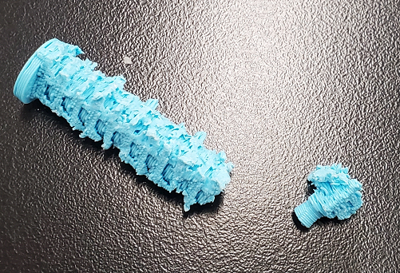
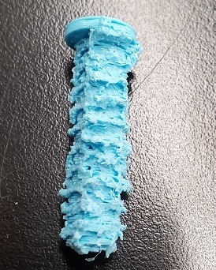
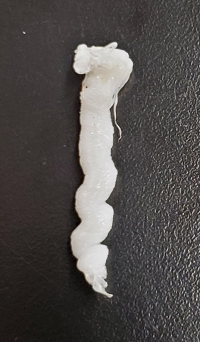

### Week 5: 3D Design and Printing
This week, our class started working with 3D printers. We learned what to do with them, how to convert a Fusion 360 model to machine code that the printer can read, and various ambitious projects that can be made via 3D printing (such as a kinesthetic dress).
Since I was still unsure on what to pick for my final project (Some of my main ideas are probably unfeasible.), I picked an object that can definitely only be made via 3D printing as opposed to a laser cutter or manually cutting wood or a similar material. For this week, I reused one of the models of my household objects, a screw.
For Week 2, the screw looked pretty funky because the components of the screw model did not line up correctly, and the top of the screw was too tall. I fixed those issues in Fusion 360 and added a slit for a 4-point screwdriver to theoretically weave the screw into a hole.
The model looks like this:
<iframe src="https://branfordschools3.autodesk360.com/shares/public/SH9285eQTcf875d3c53985b2a60824e7bc0b?mode=embed" width="800" height="600" allowfullscreen="true" webkitallowfullscreen="true" mozallowfullscreen="true" frameborder="0"></iframe>
I used a Prusa 3D printer to print my screw. The operation was high-risk because of the coil; a lot of support needed to be added, doubling the estimated print time. Many people doubted that the operation would work. This was the progression:

<!-- This HTML didn't work the way I intended it to... -->
<div display:inline-block; style="float: center">
</img>
</img>
</img></div>
<div display:inline; style="float: left">
<p style="float: left; clear: left">
Sadly, my classmates and teacher assistant were right: It was no easy task to disassemble the filmament that supported the screw when printing. I could not tell which part of the screw was extraneous support and which other parts were part of the screw's coil. Dismantling the supportive material with pliers was quite a messy job. In fact, I even snapped the very bottom accidentally! </div></p>
I 3D printed a new screw with less support, thinking that I could get away with it, but the base part was practically nonexistent, and the whole screw was moving as new layers were being printed.
The next step was to use a photogrammetry application (I used the classroom's scanner.) to scan another 3D object. I chose my miniature container of lotion. The scanner was very tricky to use, so the end result was a narrower version of the lotion bottle, and the scanner also picked up its surroundings.
This is the animated model:
<iframe id="vs_iframe" src="https://www.viewstl.com/?embedded&url=https%3A%2F%2Falan-tan90.github.io%2FPHYSCI-70%2F05_3d_design_printing%2Fassets%2Flotion.stl&color=azure&bgcolor=black" style="border:0;margin:0;width:100%;height:400px;"></iframe>
Click here to download the screw's .stl file.
Click here to download my lotion bottle's .stl file.
Back to the main page.